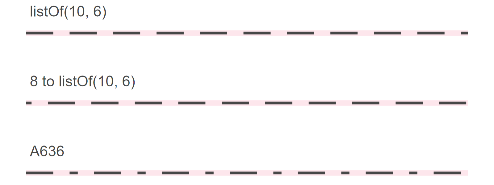

Aesthetics
Color and Fill
Colors and fills of geometries can be specified in the following ways:
RGB/RGBA (e.g.
"rgb(0, 0, 255)","rgba(0, 0, 255, 0.5)").HEX (e.g.
"#0000ff","#00f").A name, one of:

A system color name, one of:


An instance of the
java.awt.Colorclass.
Point Shapes

Line Types
Predefined Patterns

Custom Patterns
Ways to specify the linetype:
list, defining the pattern of dashes and gaps used to draw the line:
listOf(dash, gap, ...);pair of offset and pattern:
offset to listOf(dash, gap, ...);string of an even number (up to eight) of hexadecimal digits which give the lengths in consecutive positions in the string.

Text
Font Family
Universal font names:

The default font family is 'sans'.
You can also use the name of any other font installed on your system (e.g. "Times New Roman").
Font Face

The default font face is 'plain'.
Last modified: 15 января 2025